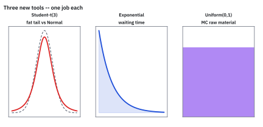
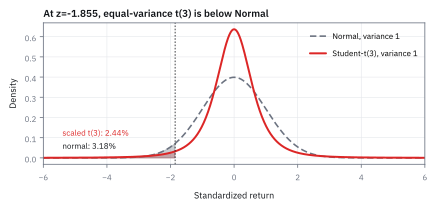
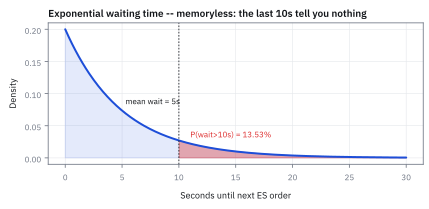
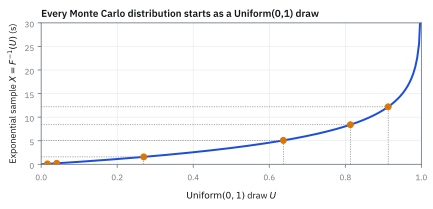
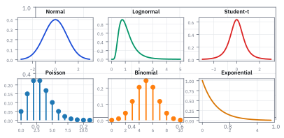

1.11 A Zoo of Distributions
เลือกรูปแบบโอกาสให้เข้ากับข้อมูล ไม่ใช่ยัดทุกอย่างลงสูตรเดียว
คุณมีข้อมูลสามชุด: จำนวนอีเมลต่อชั่วโมง เวลารอรถเมล์ และส่วนลดจากวงล้อที่มี 5 ช่อง แบบจำลองเดียวควรใช้กับทั้งสามชุดได้ไหม?
เฉลย: ไม่ได้ อีเมลต่อชั่วโมงเป็นการนับ จึงใช้ Poisson จากหัวข้อ 1.6 เวลารอเป็นค่าต่อเนื่องที่ไม่ติดลบและเริ่มนับใหม่ได้ทุกเมื่อ จึงใช้ Exponential ส่วนวงล้อ 5 ช่องมีค่าจำกัดไม่กี่ค่า จึงใช้ตารางโอกาสรายค่าแบบหัวข้อ 1.2 คำถามเลือกรูปแบบ ไม่ใช่ชื่อรูปแบบบังคับข้อมูล
หัวข้อนี้คือแผนที่ของรูปแบบโอกาสหลายตระกูล เพิ่มเครื่องมือใหม่สามตัว คือ Student-t สำหรับหางอ้วน Exponential สำหรับเวลารอ และ Uniform สำหรับสุ่มบนคอมพิวเตอร์
เริ่มจากคำถามว่าจะหยิบเครื่องมือตัวไหน
สิบหัวข้อที่ผ่านมาสร้างเครื่องมือไว้สี่ตัว คือ Binomial, Poisson, Normal และ Lognormal แต่ละตัวมาจากโจทย์คนละแบบ และแต่ละตัวตอบคำถามบนโต๊ะไปแล้วหนึ่งข้อ
ปัญหาคือของจริงไม่ได้มาพร้อมป้ายบอกว่าต้องใช้ตัวไหน สิ่งที่บอกได้คือรูปร่างของคำถาม นับจำนวนครั้ง วัดเวลารอ หรือรวมชิ้นเล็กจำนวนมาก หัวข้อนี้จึงเรียงเครื่องมือทั้งหมดไว้ข้างกันให้เทียบได้ทีเดียว
แล้วเติมอีกสามตัวที่ยังขาด คือ Student-t สำหรับวันที่แย่กว่าที่ระฆังยอมให้เป็น Exponential สำหรับเวลารอระหว่างคำสั่ง และ Uniform สำหรับสร้างเลขสุ่มให้ทุกตัวที่เหลือ
ศัพท์ที่ใช้ในหัวข้อนี้
- Cumulative Distribution Function (CDF)
- เส้นที่ตอบว่าผลลัพธ์ออกมาไม่เกินค่าที่ถามกี่เปอร์เซ็นต์ ใช้เป็นภาษากลางเทียบรูปแบบต่างชนิดกัน และใช้อ่านโอกาสของหางตรง ๆ
- Student-t distribution
- รูประฆังที่หางอ้วนกว่า Normal เกิดจากการหาร Normal ด้วยความผันผวนที่ประมาณจากข้อมูลน้อย ใช้กับตัวอย่างเล็กและใช้จำลองวันขาดทุนหนัก
- degrees of freedom
- จำนวนชิ้นข้อมูลอิสระที่เหลือไว้ประมาณความผันผวน เขียนว่า ν เช่นข้อมูล 3 แปลงเหลือ 2 ใช้คุมความหนาของหาง Student-t ยิ่งน้อยหางยิ่งอ้วน
- chi-square distribution
- รูปแบบของผลรวมกำลังสองของ Normal มาตรฐานอิสระ ν ตัว ใช้เป็นตัวหารของ Student-t และใช้ทดสอบว่าความผันผวนที่แบบจำลองบอกเข้ากับข้อมูลไหม
- gamma function
- ชื่อย่อของ integral หนึ่งแบบที่ขยายแฟกทอเรียลไปถึงเลขไม่เต็ม เช่น Γ(n) = (n − 1)! ใช้ปรับให้พื้นที่ใต้ density เป็น 1
- Cauchy distribution
- Student-t ที่ ν = 1 หางอ้วนจนค่าเฉลี่ยหาไม่ได้ ใช้เป็นตัวอย่างเตือนว่าไม่ใช่ทุกรูปแบบที่มีค่าเฉลี่ย
- power law
- หางที่ลดลงแบบ x กำลังลบค่าคงที่ ซึ่งช้ากว่าแบบ exponential มาก ใช้บอกว่าเหตุการณ์ใหญ่มากยังเกิดได้บ่อย
- Pareto distribution
- รูปแบบที่โอกาสเกินขนาด x ลดลงแบบ power law ใช้จำลองขนาดของเหตุการณ์สุดขั้ว เช่นขนาดคำสั่งซื้อขายหรือขนาดความเสียหาย
- Exponential distribution
- รูปแบบของเวลารอจนเหตุการณ์ถัดไปเกิด เมื่อเหตุการณ์มาด้วยอัตราคงที่ ใช้ตอบว่าคำสั่งถัดไปจะมาอีกกี่วินาที
- Poisson process
- เหตุการณ์ที่มาทีละครั้งด้วยอัตราคงที่ และช่วงเวลาที่ไม่ทับกันไม่เกี่ยวกัน ใช้เป็นเงื่อนไขที่ทำให้นับจำนวนได้ Poisson และเวลารอได้ Exponential
- memoryless property
- สมบัติที่เวลาที่รอมาแล้วไม่เปลี่ยนโอกาสของเวลาที่ต้องรอต่อ ใช้เป็นลายนิ้วมือของ Exponential
- Uniform distribution
- รูปแบบที่ทุกค่าในช่วงมีโอกาสเท่ากัน ใช้เป็นวัตถุดิบที่คอมพิวเตอร์สุ่มออกมา แล้วแปลงเป็นรูปแบบอื่น
- pseudo-random number generator (PRNG)
- สูตรในคอมพิวเตอร์ที่สร้างตัวเลขซึ่งดูสุ่มระหว่าง 0 กับ 1 ใช้เป็นต้นทางของการจำลองทุกชนิด
- Monte Carlo simulation
- การให้คอมพิวเตอร์สุ่มผลลัพธ์ตามกติกาซ้ำหลายหมื่นครั้งแล้วนับ ใช้ตอบคำถามที่ไม่มีสูตรปิด และตรวจสูตรที่มี
- Inverse Transform Sampling
- วิธีแปลงเลขสุ่ม Uniform ให้เป็นรูปแบบที่ต้องการ ด้วยการส่งมันย้อนกลับผ่าน CDF ของเป้าหมาย
- Box-Muller transform
- วิธีปี 1958 ที่แปลง Uniform สองตัวเป็น Normal มาตรฐานสองตัวผ่านรัศมีกับมุม ใช้เมื่อ CDF ของ Normal ย้อนกลับด้วยสูตรปิดไม่ได้
- model risk
- ความเสี่ยงจากการเลือกรูปแบบผิดตั้งแต่ต้น ไม่ใช่จากการคำนวณผิด ใช้เตือนว่าการสุ่มซ้ำด้วยสูตรเดิมไม่ได้แก้สมมติฐาน
- skewness
- ค่าเฉลี่ยของ z กำลังสาม ใช้บอกว่าหางข้างไหนยาวกว่า ค่าลบแปลว่าขาดทุนหนักเกิดบ่อยกว่ากำไรหนัก
สัญลักษณ์ที่ใช้ในหัวข้อนี้
| สัญลักษณ์ | ความหมาย | หน่วย |
|---|---|---|
| $Z$, $Z_i$ | Normal มาตรฐาน ค่าเฉลี่ย 0 ความผันผวน 1 | — |
| $\nu$ | degrees of freedom ของ Student-t | — |
| $V$ | ผลรวมกำลังสองของ Normal มาตรฐาน $\nu$ ตัว ใช้เป็นตัวหาร | — |
| $\tau$ | Student-t ดิบ คือ $Z$ หารรากของ $V/\nu$ | — |
| $T$, $s$ | Student-t ที่ย่อสเกลด้วย $s$ ให้ variance เป็น 1 | — |
| $\Gamma(a)$ | gamma function | — |
| $\lambda$ | อัตราการเกิดเหตุการณ์ | ครั้งต่อวินาที |
| $X$, $t$ | เวลารอจริง และค่าเวลาที่ถาม | วินาที |
| $U$ | เลขสุ่มจาก Uniform ระหว่าง 0 กับ 1 | — |
| $F$, $F^{-1}$ | CDF ของเป้าหมาย และตัวย้อนกลับของมัน | 0 ถึง 1, หน่วยของ $X$ |
| $r$, $\theta$ | รัศมีและมุมใน Box-Muller | —, เรเดียน |
| $x_m$, $k$ | ขนาดต่ำสุด และเลขชี้กำลังของหาง Pareto | หน่วยของขนาด, — |
Table 1 — สี่เครื่องมือที่สร้างไว้แล้ว และคำตอบที่ได้
| รูปแบบ | งานหนึ่งอย่าง | สูตร | คำตอบบนโต๊ะ |
|---|---|---|---|
| Binomial | นับจำนวนครั้งที่สำเร็จจาก $n$ ครั้ง | $P(X\ge r)=\sum_{k=r}^{n}\binom{n}{k}p^k(1-p)^{n-k}$ | ชนะตลาด 8 ใน 10 ปีด้วยดวง: 5.47% [1.5] |
| Poisson | นับเหตุการณ์ในช่วงเวลา เมื่อรู้แค่อัตรา | $P(X\ge r)=1-\sum_{k=0}^{r-1}\dfrac{\lambda^k e^{-\lambda}}{k!}$ | พอร์ต 200 ราย ผิดนัด 5 รายขึ้นไป: 18.47% [1.6] |
| Normal | ผลรวมของชิ้นเล็กจำนวนมาก | $z=\dfrac{x-\mu}{\sigma}$ | พอร์ต \$50 ล้าน ขาดทุนเกิน 2%: 3.18% ต่อวัน [1.9] |
| Lognormal | ราคาที่ห้ามติดลบและเบ้ขวา | $S_T=S_0e^{(\mu-\sigma^2/2)T+\sigma\sqrt{T}Z}$ | หุ้น \$120 ปิดปีเหนือทุน: 49.91% [1.10] |
ค่าเฉลี่ยและ variance ของสี่ตัวนี้ได้มาแล้ว: Binomial np กับ np(1−p) Poisson λ ทั้งคู่ Normal μ กับ σ² และ Lognormal มีค่าเฉลี่ย $e^{\mu+\sigma^2/2}$ เมื่อ μ, σ คือของ log
เครื่องมือใหม่สามตัว แต่ละตัวตอบคำถามหนึ่งข้อ
Student-t ตอบว่า วันที่ขาดทุนเกินสี่เท่าของความผันผวนเกิดบ่อยแค่ไหน ถ้าหางอ้วนกว่าระฆัง
Exponential ตอบว่า คำสั่งซื้อขายถัดไปจะเข้ามาอีกกี่วินาที ซึ่ง Poisson ตอบไม่ได้เพราะ Poisson นับจำนวน ไม่ได้วัดเวลา
Uniform ตอบว่า จะสุ่มเวลารอหรือราคาหุ้นบนคอมพิวเตอร์ได้อย่างไร เพราะเครื่องสุ่มได้แค่เลขเรียบระหว่าง 0 กับ 1 นอกจากนี้ยังมีตัวประกอบอีกสองตัวที่โผล่ระหว่างทาง คือ chi-square และ Pareto
Figure 1.11a — เครื่องมือใหม่สามตัวในภาพเดียว

ซ้ายคือ Student-t ที่หางอ้วนกว่าระฆัง กลางคือ Exponential ที่สูงสุดตรงศูนย์แล้วลดลง ขวาคือ Uniform ที่แบนราบ แต่ละตัวแก้ปัญหาที่สี่ตัวใน Table 1 แก้ไม่ได้
Student-t เริ่มจากโรงเบียร์: สามแปลงที่บังเอิญเหวี่ยงน้อย
สมมติทดลองข้าวบาร์เลย์พันธุ์ใหม่ 3 แปลง ได้ผลผลิตเพิ่ม 0.5, 0.6 และ 0.7 หน่วย ความจริงพันธุ์ใหม่ไม่ได้ดีกว่า และความผันผวนจริงระหว่างแปลงคือ 1 หน่วย ถ้าใช้ความผันผวนจริง อัตราส่วนผลเฉลี่ยต่อความคลาดของค่าเฉลี่ยได้ราว 1.04 ซึ่งธรรมดามาก
แต่ไม่มีใครรู้ความผันผวนจริง ต้องประมาณจากสามแปลงนี้ ซึ่งบังเอิญเกาะกลุ่มจนได้แค่ 0.1 อัตราส่วนจึงพุ่งเป็น 10.4 และหลอกว่าพันธุ์ใหม่ดีกว่าแน่นอน ตัวหารที่เล็กเพราะบังเอิญนี่เองที่ทำให้ระฆังใช้ไม่ได้กับข้อมูลน้อย
ที่มาที่ไป: William Gosset กับโรงเบียร์ Guinness ปี 1908
Gosset เป็นนักเคมีของโรงเบียร์ Guinness ในดับลิน ต้องเทียบข้าวบาร์เลย์และมอลต์จากการทดลองที่บางชุดมีแค่สามหรือสี่แปลง เขาหารูปแบบที่แท้จริงของอัตราส่วนนี้เมื่อตัวหารเป็นค่าที่สุ่มได้ โรงเบียร์ไม่ให้พนักงานตีพิมพ์ในนามจริง เขาจึงตีพิมพ์ใน Biometrika ปี 1908 ด้วยนามปากกา Student
วันนี้ Student-t ใช้สองงาน คือทดสอบผลจากข้อมูลน้อย ซึ่งจะใช้เต็มในบทที่ 3 และจำลองผลตอบแทนที่มีวันขาดทุนหนักบ่อยกว่าระฆัง ซึ่งเป็นงานของหัวข้อนี้
ขั้นที่ 1 — นิยามของ Student-t: หาร Normal ด้วยความผันผวนที่สุ่มได้
ตัวบนคือ Normal มาตรฐาน ตัวล่างคือรากของค่าเฉลี่ยของกำลังสองของ Normal อิสระอีก $\nu$ ตัว ซึ่งเลียนแบบความผันผวนที่ประมาณจากข้อมูล $\nu$ ชิ้น
ถ้าตัวล่างเท่ากับ 1 พอดีทุกครั้ง $\tau$ ก็คือระฆังธรรมดา แต่ตัวล่างสุ่มได้ บางครั้งเล็กมากแบบสามแปลงของโรงเบียร์ ผลหารจึงพุ่งไกลกว่าที่ระฆังยอมให้ หางจึงอ้วน
ถ้า $\nu$ ใหญ่มาก ค่าเฉลี่ยของกำลังสองหลายตัวนิ่งอยู่ใกล้ 1 ตัวล่างแทบไม่สุ่ม Student-t จึงค่อย ๆ กลายเป็นระฆัง
ขั้นที่ 2 — โรงเบียร์ด้วยตัวเลข: เกณฑ์ 5% ต้องขยับจาก 1.96 เป็น 4.30
ข้อมูล 3 แปลงเหลือ 2 ชิ้นอิสระไว้ประมาณความผันผวน เพราะหนึ่งชิ้นถูกใช้หาค่าเฉลี่ยไปแล้ว จึงใช้ $\nu=2$
ถ้าใช้เกณฑ์ของระฆังคือ 1.96 กับข้อมูลสามแปลง จะเตือนผิดเกือบหนึ่งในห้าครั้ง ไม่ใช่หนึ่งในยี่สิบ เกณฑ์ที่ถูกของ Student-t ที่ $\nu=2$ คือ 4.303 อัตราส่วน 10.39 ยังผ่านเกณฑ์นี้ ข้อมูลสามแปลงที่บังเอิญเกาะกลุ่มจึงหลอกได้ แม้ใช้เกณฑ์ที่ถูก
ขั้นที่ 3 — เตรียมเครื่องมือ: gamma คือชื่อย่อของ integral หนึ่งแบบ
ให้ $a$ เป็นจำนวนบวก gamma เป็นแค่ชื่อของ integral นี้ และมีกฎหนึ่งข้อที่จะใช้ตัดทอนในขั้นถัดไป
บรรทัดที่สองถึงสี่ integrate ทีละส่วน ก้อนขอบเป็นศูนย์เพราะที่ศูนย์มีตัวคูณ $u^a$ และที่ปลายไกล $e^{-u}$ ตายเร็วกว่า สี่บรรทัดล่างใช้กฎนี้ซ้ำจาก $\Gamma(1)=1$ ได้แฟกทอเรียล gamma จึงเป็นแฟกทอเรียลที่ใช้กับเลขไม่เต็มได้
ขั้นที่ 4 — density ของตัวหาร $V$: รวมตามเปลือกทรงกลม
มอง $Z_1,\dots,Z_\nu$ เป็นพิกัดของจุดหนึ่งใน $\nu$ มิติ $V$ คือระยะจากจุดกลางคูณกับตัวเอง รวมโอกาสบนเปลือกบาง ๆ ที่มีระยะเท่ากัน แบบเดียวกับวงแหวนในหัวข้อ 1.9
ความสูงรวมของทุกพิกัดขึ้นกับ $r$ อย่างเดียว เปลือกรัศมี $r$ มีพื้นที่ผิวโตตาม $r^{\nu-1}$ เหมือนวงกลมโตตาม $r$ และผิวทรงกลมโตตาม $r^2$ เปลี่ยนเป็น $v=r^2$ ได้ $dr=dv/(2\sqrt v)$ จึงได้บรรทัดที่สาม
ค่าคงที่ของพื้นที่ผิวไม่ต้องหา เพราะสุดท้ายต้องปรับให้พื้นที่รวมเป็น 1 บรรทัดที่สี่ตั้ง $u=v/2$ แล้วใช้นิยาม gamma ได้ตัวหารของบรรทัดสุดท้าย
ขั้นที่ 5 — ค่าเฉลี่ยและ variance ของ chi-square: ไม่ต้อง integrate เลย
$V$ คือผลบวกของ $Z_i^2$ ที่ไม่เกี่ยวกัน $\nu$ ตัว ใช้กฎบวกของหัวข้อ 1.4 กับ moment ของระฆังจากหัวข้อ 1.9 คือค่าเฉลี่ยของ $Z^2$ เป็น 1 และของ $Z^4$ เป็น 3
ค่าเฉลี่ยของ $V/\nu$ จึงเป็น 1 พอดี ตัวหารของ Student-t จึงอยู่รอบ 1 แต่ variance ของ $V/\nu$ คือ $2/\nu$ ข้อมูลน้อยตัวหารเหวี่ยงมาก ข้อมูลมากตัวหารนิ่ง
นี่คือเหตุผลที่ chi-square ใช้ทดสอบแบบจำลองความเสี่ยงได้: ถ้าแบบจำลองถูก ผลรวมกำลังสองของความคลาดที่หารความผันผวนแล้วควรมีค่าเฉลี่ยราว $\nu$ ถ้าได้เกินไปมาก แบบจำลองประเมินความผันผวนต่ำไป
ขั้นที่ 6 — variance ของ Student-t และเหตุที่ต้องหารราก 3
ค่าเฉลี่ยของ $\tau$ เป็นศูนย์ด้วยความสมมาตร variance จึงเป็นค่าเฉลี่ยของ $\tau^2$ ซึ่งต้องใช้ค่าเฉลี่ยของ $1/V$
บรรทัดแรกคูณ $1/v$ เข้ากับ density ซึ่งลดกำลังของ $v$ ลงหนึ่ง แล้วใช้การแทนตัวแปรเดิม บรรทัดที่สองใช้กฎ $\Gamma(a+1)=a\Gamma(a)$ ตัด gamma สองตัวที่ห่างกันหนึ่งขั้น
แยกค่าเฉลี่ยของผลคูณได้เพราะ $Z$ ไม่เกี่ยวกับ $V$ ที่ $\nu=3$ variance เป็น 3 จึงหารราก 3 เพื่อให้เหลือ 1 เท่ากับระฆัง แล้วเทียบกันอย่างยุติธรรม เรียกตัวที่หารแล้วว่า $T$ และเรียก $s=\sqrt{1/3}$
ขั้นที่ 7 — เมื่อหางอ้วนจน variance หรือค่าเฉลี่ยหาไม่ได้
สูตรขั้นที่ 6 ใช้ได้เฉพาะ $\nu\gt2$ ลองดูว่าเกิดอะไรเมื่อ $\nu$ เล็กกว่านั้น
integral ของ $1/V$ ต้องการกำลังของ $v$ ที่มากกว่าลบหนึ่ง ไม่งั้นพื้นที่ใกล้ศูนย์ใหญ่ไม่จำกัด ซึ่งเกิดเมื่อ $\nu\le2$ เพราะตัวหารเล็กมากเกิดบ่อยเกินไป
ที่ $\nu=1$ แม้ค่าเฉลี่ยก็หาไม่ได้ ถ้าหางของผลตอบแทนอ้วนระดับนี้ standard deviation และ Sharpe ratio ไม่มีความหมาย และค่าเฉลี่ยของข้อมูลจะกระโดดทุกครั้งที่มีวันสุดขั้วใหม่
ขั้นที่ 8 — density ของ Student-t: ตรึงตัวหารก่อน แล้วเฉลี่ย
ถ้ารู้ $V=v$ แล้ว $\tau$ ก็เป็นแค่ Normal ที่ variance เท่ากับ $\nu/v$ จากนั้นเฉลี่ย density นี้ตามทุกค่าของ $V$
คูณ density สองตัว กำลังของ $v$ รวมเป็น $(\nu-1)/2$ และเลขชี้กำลังรวมเป็น $-v(1+x^2/\nu)/2$ ตั้งชื่อ $a$ กับ $b$ แล้วจะเห็นว่าเป็น integral gamma เดิม แทน $u=bv$ ได้ตัวคูณ $b^{-a}$
แทน $a$ และ $b$ กลับ ตัดกำลังของ 2 ได้สองบรรทัดสุดท้าย ท้ายสูตรคือ $x$ กำลังลบค่าคงที่เมื่อ $x$ ใหญ่ ซึ่งเป็น power law ไม่ใช่ exponential แบบระฆัง
ขั้นที่ 9 — สูตรที่ใช้งาน และหางต่างกันแค่ไหนที่ระยะ 4
ย่อสเกลด้วย $s$ แล้วหารความสูงด้วย $s$ เพื่อรักษาพื้นที่ จากนั้นเทียบรูปทรงหางของ $\nu=3$ กับระฆังที่ระยะ 4 โดยให้ความสูงตรงกลางเป็น 1 ทั้งคู่
ที่ระยะ 4 เส้น Student-t ยังสูงราว 2.5% ของยอด ส่วนระฆังเหลือแค่ราว 0.03% ต่างกันราว 74 เท่า ยิ่งไกลยิ่งต่าง เพราะ power law ลดช้ากว่า exponential ที่มีระยะคูณตัวเองอยู่ในเลขชี้กำลัง
กลับไปที่พอร์ต \$50 ล้าน: สองแบบจำลองตอบไม่เหมือนกัน
ใช้ z = −1.855 จากหัวข้อ 1.9 ซึ่งคือเกณฑ์ขาดทุน 2% ต่อวัน แล้วเทียบระฆังกับ Student-t ที่ $\nu=3$ ซึ่งย่อสเกลให้ variance เท่ากัน นี่คือการเทียบเพื่อเรียนรู้ งานจริงต้องประมาณค่า ν จากข้อมูลและตรวจด้วย Quantile-Quantile (QQ) plot ก่อน
ขั้นที่ 10 — วันขาดทุน 2% ทั่วไป: Normal เทียบ Student-t
แปลงเกณฑ์กลับเป็นสเกลของ Student-t ดิบ แล้วอ่านพื้นที่หาง
ตาราง Student-t ที่ 3 degrees of freedom ให้หาง 2.5% ที่ 3.182 จุด 3.213 ไกลกว่าเล็กน้อยจึงได้ 2.44% ต่ำกว่าระฆัง เพราะเมื่อ variance เท่ากัน Student-t กองพื้นที่ไว้ตรงกลางกับหางไกล และเอามาจากไหล่ ซึ่งเป็นย่านของวันขาดทุน 2%
ขั้นที่ 11 — วันหายนะที่ระยะ 4 เท่า: Normal เทียบ Student-t
ระยะ 4 เท่าของความผันผวนคือขาดทุนราว 4.4% ในพอร์ตนี้ ทำแบบเดิมแล้วแปลงเป็นความถี่ต่อปีด้วย 252 วันเทรด
ระฆังบอกว่าวันแบบนี้เกิดราวครั้งเดียวใน 125 ปี Student-t บอกว่าเกิดราวทุก 1.3 ปี ข้อมูลกับค่าเฉลี่ยและ variance ชุดเดียวกัน แต่ความถี่ของวันหายนะต่างกันเกือบร้อยเท่า
คำเตือนให้ risk desk: 97 เท่าคือความถี่ ไม่ใช่ขนาดเงิน
97.3 เท่าเปรียบเทียบว่าวันขาดทุนเกินสี่เท่าของความผันผวนเกิดบ่อยแค่ไหน ถ้าเลือกระฆัง แผนรับมือวิกฤติจะถูกออกแบบสำหรับเหตุการณ์ร้อยปีครั้ง ขณะที่ Student-t บอกให้เตรียมรับทุกปีกว่า ๆ การแปลงเป็นเงินสำรองต้องใช้ VaR หรือ Expected Shortfall ในบทที่ 17
Figure 1.11b — วันขาดทุน 2% เดียวกัน สองคำตอบ

Student-t ที่ variance เท่าระฆัง ต่ำกว่าระฆังที่ไหล่ แต่สูงกว่ามากที่หางไกล คำตอบจึงขึ้นกับว่าถามที่เกณฑ์ไหน ต้องดู QQ plot ของข้อมูลจริงก่อนเลือกทั้งคู่
Exponential: คำสั่งถัดไปจะเข้ามาอีกกี่วินาที
คำสั่งซื้อขายเข้ามาเฉลี่ยนาทีละ 12 รายการ หรือวินาทีละ 0.2 รายการ ตอนนี้เพิ่งมีคำสั่งเข้าไป ถามว่าอีกกี่วินาทีคำสั่งถัดไปจะมา และโอกาสที่ต้องรอเกิน 10 วินาทีคือเท่าไร
สมมติสองข้อแบบหัวข้อ 1.6: อัตราคงที่ตลอด และช่วงเวลาที่ไม่ทับกันไม่เกี่ยวกัน การมาของคำสั่งแบบนี้เรียกว่า Poisson process จำนวนคำสั่งใน 10 วินาทีจึงเป็น Poisson ที่มีค่าเฉลี่ย 2 และเวลารอจะหาได้จากตรงนั้น
ที่มาที่ไป: Agner Erlang กับชุมสายโทรศัพท์โคเปนเฮเกน ปี 1909
Erlang เป็นวิศวกรของบริษัทโทรศัพท์โคเปนเฮเกน ต้องตอบว่าชั่วโมงเร่งด่วนต้องมีคู่สายกี่เส้นและพนักงานกี่คน เขาจำลองสายที่โทรเข้าด้วยอัตราคงที่ และพบว่าช่วงห่างระหว่างสายสั้น ๆ เกิดบ่อยที่สุดแล้วลดลงแบบ exponential งานนี้เป็นจุดเริ่มของทฤษฎีคิว
ตลาดอิเล็กทรอนิกส์ใช้แบบจำลองเดียวกันเป็นจุดตั้งต้นของการมาถึงของคำสั่ง แต่ตารางข้อจำกัดของหัวข้อ 1.6 บอกแล้วว่าคำสั่งจริงมักมาเป็นกลุ่ม คำสั่งหนึ่งกระตุ้นคำสั่งอื่น Exponential จึงเป็นเส้นฐานที่ใช้เทียบ ไม่ใช่คำตอบสุดท้าย
ขั้นที่ 12 — จาก Poisson ที่นับศูนย์ครั้ง สู่เวลารอ
รอเกิน $t$ วินาทีแปลว่าในช่วง $t$ วินาทีนั้นไม่มีคำสั่งเข้าเลย ใช้ Poisson ที่ $r=0$ แล้วได้ CDF, density และค่าเฉลี่ย
ใน $t$ วินาที จำนวนคำสั่งเป็น Poisson ที่มีค่าเฉลี่ย $\lambda t$ โอกาสได้ศูนย์ครั้งคือ $e^{-\lambda t}$ เอา 1 ลบได้ CDF แล้ว differentiate ได้ density ตามหัวข้อ 1.8
ค่าเฉลี่ย integrate ทีละส่วน ให้ $t$ เป็นตัวที่ differentiate ก้อนขอบเป็นศูนย์เพราะ $e^{-\lambda t}$ ตายเร็วกว่า $t$ โต ที่เหลือได้ $1/\lambda$ อัตรายิ่งสูง เวลารอยิ่งสั้น ตรงตามสามัญสำนึก
ขั้นที่ 13 — variance ของ Exponential: ความผันผวนเท่ากับค่าเฉลี่ยพอดี
integrate ทีละส่วนอีกครั้งเพื่อหาค่าเฉลี่ยของ $X^2$ แล้วใช้สูตรลัดของหัวข้อ 1.4
บรรทัดที่สี่ถึงหกคือค่าเฉลี่ยของขั้นที่ 12 ที่คูณ $2/\lambda$ ไม่ต้อง integrate ใหม่ ความผันผวน 5 วินาทีเท่ากับค่าเฉลี่ย 5 วินาทีพอดี
นี่คือลายนิ้วมือของ Exponential ถ้าเวลาห่างระหว่างคำสั่งจริงมีความผันผวนมากกว่าค่าเฉลี่ยชัดเจน แปลว่าคำสั่งมาเป็นกลุ่ม ไม่ได้มาแยกกัน
ขั้นที่ 14 — memoryless: เวลาที่รอมาแล้วหายไปจากสมการ
รอมาแล้ว $s$ วินาทียังไม่มีคำสั่ง โอกาสที่ต้องรอต่ออีกเกิน $t$ วินาทีเป็นเท่าไร ใช้นิยาม conditional probability ของหัวข้อ 1.7 แล้วลองกับตัวเลข
ตัวบนยุบเหลือก้อนเดียว เพราะรอเกิน $s+t$ ก็แปลว่ารอเกิน $s$ อยู่แล้ว จุดชี้ขาดคือตอนรวมเลขชี้กำลัง ก้อน $\lambda s$ หักกันหมด เวลาที่รอมาแล้วไม่เหลืออยู่ในคำตอบ
รอมาแล้ว 10 วินาที โอกาสต้องรอต่ออีกเกิน 10 วินาทียังเป็น 13.53% เท่ากับตอนเริ่มรอใหม่ คำสั่งถัดไปไม่ได้ใกล้ขึ้นเพราะเรารอมานาน
ขั้นที่ 15 — เวลารอเฉลี่ยของคำสั่ง
แทนอัตรา 0.2 คำสั่งต่อวินาทีในสูตรของขั้นที่ 12
คำสั่งเข้าวินาทีละ 0.2 รายการ จึงห่างกันเฉลี่ย 5 วินาที ซึ่งตรงกับ 12 รายการต่อ 60 วินาที
ขั้นที่ 16 — โอกาสที่ต้องรอเกิน 10 วินาที
แทนอัตราเดิมและเวลา 10 วินาทีในสามบรรทัดแรกของขั้นที่ 12
ราวหนึ่งในเจ็ดครั้งจะไม่มีคำสั่งเข้าเลยนานกว่าสองเท่าของค่าเฉลี่ย ซึ่งเป็นเลขเดียวกับชั่วโมงเงียบของกริ่งในหัวข้อ 1.6 เพราะทั้งคู่คือ Poisson ที่นับได้ศูนย์ครั้งเมื่อค่าเฉลี่ยเป็น 2
Worked Example — โจทย์จิ๋วที่คำนวณได้
โจทย์ให้อะไรมาบ้าง: คำสั่งเข้ามาเฉลี่ย 0.2 รายการต่อวินาที และเวลารอเป็น Exponential ต้องหาเวลารอเฉลี่ยและโอกาสรอเกิน 10 วินาที
คำตอบ: เวลารอเฉลี่ย 1 หาร 0.2 ได้ 5 วินาที และโอกาสรอเกิน 10 วินาทีคือ e กำลังลบ 2 ได้ราว 13.53%
ตรวจเองใน 10 วินาที: กด 1/0.2 ต้องได้ 5 และ exp(-2) ต้องได้ 0.1353 ถ้าได้ 50% แปลว่าเผลอคิดว่าเวลารอแบ่งครึ่งที่ค่าเฉลี่ย
แปลว่าอะไร: รอมานานไม่ได้ทำให้คำสั่งถัดไปใกล้ขึ้น ภายใต้แบบจำลองนี้ กับดักคือเลือกรูปแบบจากชื่อที่คุ้นหู แทนที่จะดูว่าข้อมูลเป็นเวลา เป็นจำนวน หรือเป็นผลรวม
ขั้นที่ 17 — median กับค่าเฉลี่ย: ครึ่งหนึ่งของคำสั่งมาก่อน 3.5 วินาที
หาเวลาที่ครึ่งหนึ่งของคำสั่งมาถึงแล้ว โดยแก้ CDF เท่ากับ 0.5 แล้วดูว่าที่ค่าเฉลี่ยมีคำสั่งมาแล้วกี่เปอร์เซ็นต์
ครึ่งหนึ่งของคำสั่งมาภายใน 3.47 วินาที และเกือบสองในสามมาก่อนค่าเฉลี่ย 5 วินาที ค่าเฉลี่ยไม่ได้แบ่งครึ่ง เพราะหางขวายาวของการรอนาน ๆ ดึงค่าเฉลี่ยขึ้น เหมือนค่าเฉลี่ยกับ median ของราคาในหัวข้อ 1.10
Figure 1.11c — memoryless ในรูปพื้นที่

โซนแดงคือโอกาสรอเกิน 10 วินาที 13.53% ถ้าตัดส่วนที่รอผ่านมาแล้วทิ้ง แล้วขยายส่วนที่เหลือให้พื้นที่เป็น 1 ใหม่ รูปทรงจะเหมือนเส้นตั้งต้นเป๊ะ
Uniform: เครื่องสุ่มให้ 0.63 แล้วจะได้เวลารอได้อย่างไร
คอมพิวเตอร์มีสูตรที่ให้ตัวเลขดูสุ่มระหว่าง 0 กับ 1 เรียกว่า pseudo-random number generator สมมติรอบนี้ได้ 0.63 เราอยากได้เวลารอหนึ่งค่าที่มีรูปแบบ Exponential ตามขั้นที่ 12 คำตอบคือหาเวลาที่มีคำสั่งมาแล้ว 63% พอดี ซึ่งคือ 4.97 วินาที ขั้นที่ 18 ถึง 20 แสดงว่าทำไมวิธีนี้ถูก
ที่มาที่ไป: Stanislaw Ulam กับไพ่ solitaire ปี 1946
ปี 1946 ที่ Los Alamos Ulam นอนพักฟื้นแล้วเล่นไพ่ solitaire เขาสงสัยว่าโอกาสชนะเป็นเท่าไร พอพยายามนับด้วยสูตรแล้วซับซ้อนเกินไป จึงคิดว่าแจกไพ่จริงสักร้อยรอบแล้วนับง่ายกว่า John von Neumann เห็นว่าคอมพิวเตอร์รุ่นแรกทำแบบนี้ได้หลายล้านรอบ
ทั้งคู่ใช้วิธีนี้จำลองนิวตรอนในงานนิวเคลียร์ และ Nicholas Metropolis ตั้งชื่อว่า Monte Carlo ตามเมืองคาสิโนในโมนาโก โจทย์ที่ตามมาคือแปลงเลขเรียบระหว่าง 0 กับ 1 ให้เป็นรูปแบบใดก็ได้อย่างแม่นยำ
ขั้นที่ 18 — Inverse Transform Sampling: ทำไมย้อนผ่าน CDF แล้วได้รูปทรงที่ต้องการ
ให้ $F$ เป็น CDF ของเป้าหมาย สุ่ม $U$ แล้วตั้ง $X=F^{-1}(U)$ ต้องตรวจว่า CDF ของ $X$ คือ $F$ จริง
บรรทัดที่สองถึงห้าคือหัวใจ: เพราะ $F$ ไม่เคยลดลง การถามว่าผลที่ย้อนกลับไม่เกิน $x$ เป็นคำถามเดียวกับการถามว่าเลขสุ่มไม่เกิน $F(x)$ เช่นเวลารอไม่เกิน 4.97 วินาทีก็ต่อเมื่อเลขสุ่มไม่เกิน 0.63
สองบรรทัดสุดท้ายใช้สมบัติเดียวของเลขเรียบ คือโอกาสที่จะไม่เกินระดับหนึ่งเท่ากับระดับนั้นพอดี เช่นโอกาสไม่เกิน 0.63 คือ 63% ผลจึงมี CDF ตรงตามเป้า
ขั้นที่ 19 — CDF ย้อนกลับของ Exponential
ตั้ง $U$ เท่ากับ CDF ของขั้นที่ 12 แล้วแก้หาเวลา
เลขสุ่มอยู่ระหว่าง 0 กับ 1 จึงมี $1-U$ เป็นบวก ใส่ $\ln$ ได้ และ $\ln$ ของเลขระหว่าง 0 กับ 1 ติดลบ พอหาร $-\lambda$ เวลารอจึงออกมาเป็นบวกเสมอ
ขั้นที่ 20 — ลองจริง: เลขสุ่ม 0.63 กลายเป็นเวลารอ 4.97 วินาที
แทน $\lambda=0.2$ และ $U=0.63$ ในสูตรของขั้นที่ 19
ได้ 4.97 วินาที ตรงกับ Figure 1.11d ทำซ้ำหนึ่งหมื่นครั้งด้วยเลขสุ่มใหม่ทุกครั้ง ค่าเฉลี่ยของเวลาที่ได้จะเข้าใกล้ 5 วินาที และราว 13.5% จะเกิน 10 วินาที
วิธีเดียวกันสร้างราคาปลายทาง 20,000 ค่าใน Figure 1.10d ของหัวข้อ 1.10: สุ่มเลขเรียบ แปลงเป็น Normal ผ่าน $\Phi^{-1}$ แล้วใส่ในสูตรราคา Uniform กับการย้อนผ่าน CDF จึงเป็นทางเดินมาตรฐานของ Monte Carlo ในงานการเงิน
ขั้นที่ 21 — Box-Muller ปี 1958: เมื่อย้อน CDF ของ Normal ด้วยสูตรปิดไม่ได้
CDF ของ Normal ไม่มีสูตรปิด จึงย้อนตรง ๆ ไม่ได้ Box-Muller ใช้เลขเรียบสองตัว $u_1=0.25$ และ $u_2=0.60$ สร้างรัศมีกับมุม แล้วฉายกลับเป็น Normal สองตัว
ความสูงของระฆังสองมิติขึ้นกับรัศมีอย่างเดียว มุมจึงสุ่มเรียบรอบวง ส่วนรัศมีคูณตัวเองมี density $\tfrac12e^{-v/2}$ ซึ่งคือ Exponential ที่อัตรา ½ ย้อนได้ด้วยขั้นที่ 19 ไม่ต้องใช้ $1-U$ เพราะ $U$ กับ $1-U$ สุ่มเหมือนกัน
ลองตรวจ: ระยะของจุด −1.3471 กับ −0.9787 จากศูนย์กลางคือ 1.6651 เท่ากับรัศมีพอดี ได้ Normal มาตรฐานสองตัวที่ไม่เกี่ยวกันจากเลขเรียบสองตัว โดยไม่ต้องประมาณอะไรเลย
Figure 1.11d — ทุกรูปแบบเริ่มจากเลขสุ่ม Uniform

แกนนอนคือเลขสุ่มเรียบ แกนตั้งคือเวลารอที่ได้จากการย้อนผ่าน CDF เส้นทึบคือสูตรของขั้นที่ 19 จุดส้มคือการสุ่มจริง 6 ครั้ง เลขสุ่มใกล้ 1 ให้เวลารอยาวมาก ซึ่งคือหางขวาของ Exponential
ขั้นที่ 22 — Pareto: เมื่อขนาดของเหตุการณ์มีหางแบบ power law
ขนาดคำสั่งซื้อขายมักมีหางยาวมาก สมมติคำสั่งเล็กสุด 100 หุ้น และโอกาสเกินขนาด $x$ ลดลงแบบ $(x_m/x)^{k}$ โดย $k=1.5$ หาค่าเฉลี่ย แล้วเทียบหางกับ Exponential ที่ค่าเฉลี่ยเท่ากัน
density คือความชันของ CDF ตามหัวข้อ 1.8 ค่าเฉลี่ยมีได้เฉพาะเมื่อ $k\gt1$ เพราะไม่งั้น $x^{1-k}$ ไม่ลดลงที่ปลายไกล ทำนองเดียวกัน variance มีได้เฉพาะเมื่อ $k\gt2$ ที่ $k=1.5$ จึงมีค่าเฉลี่ยแต่ไม่มี variance
ค่าเฉลี่ย 300 หุ้นเท่ากัน แต่ Pareto ให้คำสั่งเกินหนึ่งหมื่นหุ้นหนึ่งในพันครั้ง ขณะที่ Exponential บอกว่าแทบไม่มีวันเกิด งานทดสอบภาวะวิกฤติจึงใช้หางแบบนี้ในทฤษฎีค่าสุดขั้ว
กับดัก: คำตอบขึ้นกับรูปแบบที่เราเลือก
ค่าเฉลี่ยและ variance ชุดเดียวกัน เปลี่ยนจากระฆังเป็น Student-t แล้ววันหายนะที่ระยะ 4 เท่าเกิดบ่อยขึ้น 97 เท่า จากร้อยปีครั้งเป็นทุกปีกว่า ๆ นี่คือ model risk ข้อมูลใหม่ช่วยตรวจและแก้แบบจำลองได้ แต่การสุ่มซ้ำอีกล้านรอบด้วยสูตรเดิมลดแค่ความคลาดจากการสุ่ม ไม่ได้แก้สมมติฐานที่ผิด
กับดัก: ค่าเฉลี่ยกับ variance ไม่พอ ต้องดู skewness และ kurtosis ด้วย
กลยุทธ์หนึ่งได้ +0.2% ใน 99 วันจาก 100 แล้วเสีย −15% ในวันที่เหลือ ค่าเฉลี่ยวันละ +0.048% ความผันผวน 1.51% ดูธรรมดา แต่ skewness คือ −9.8 และ kurtosis คือ 98 ขณะที่ระฆังได้ 0 กับ 3 นี่คือหน้าตาของการขาย option: เก็บเงินทีละนิดทุกวันแล้วคืนหมดในวันเดียว ช่วง 100 วันที่ไม่เจอวันร้ายเกิดราว 37% ของเวลา และในช่วงนั้น Sharpe ratio ดูสวยมาก ตลาดจริงมักมี kurtosis ราว 5 ถึง 10
ที่มาที่ไป: ทำไมไม่ใช้ระฆังกับทุกอย่างไปเลย
ระฆังเกิดจากผลรวมของชิ้นเล็กจำนวนมากที่ไม่เกี่ยวกัน ตามหัวข้อ 1.9 ของที่ไม่ได้เกิดแบบนั้นมีรูปทรงคนละอย่าง เวลารอไม่ได้มาจากการบวก มันมาจากการรอ จำนวนครั้งเป็นเลขเต็มที่ไม่ติดลบ และสัดส่วนถูกบีบอยู่ระหว่างศูนย์กับหนึ่ง
ยัดทุกอย่างลงระฆังจึงผิดในทางที่คาดเดาได้ เช่นระฆังของเวลารอที่มีค่าเฉลี่ย 5 วินาทีและความผันผวน 5 วินาที ให้โอกาสเวลารอติดลบถึง 16% ซึ่งเป็นไปไม่ได้
ข้อจำกัด: วิธีนี้สมมติอะไร และของจริงเป็นอย่างไร
| เรื่อง | วิธีนี้สมมติว่า | ของจริงเป็นอย่างไร | ผลที่ตามมาเวลาใช้งาน |
|---|---|---|---|
| การเลือกรูป | มีรูปที่ตรงกับข้อมูล | ข้อมูลจริงไม่ตรงกับรูปไหนเป๊ะ | การเลือกเป็นการประนีประนอม ต้องตรวจตรงส่วนที่ใช้งาน เช่นหาง |
| จำนวนข้อมูล | มีข้อมูลพอจะแยกว่ารูปไหนเหมาะ | ข้อมูลวิกฤติมีน้อยมาก | หลายรูปอธิบายข้อมูลชุดเดียวกันได้พอ ๆ กัน แต่ให้หางต่างกันมาก |
| ความคงรูป | รูปทรงไม่เปลี่ยนตามเวลา | วิกฤติเปลี่ยนรูปทรงไปเลย | แบบจำลองที่ fit ช่วงสงบมักพังในช่วงที่ต้องใช้จริง |
แถวล่างคือเหตุผลที่การทดสอบภาวะวิกฤติต้องทำแยกต่างหาก ไม่ใช่หวังให้แบบจำลองเดียวครอบคลุมทุกช่วง
Figure 1.11e — สวนสัตว์หกตัวในตารางเดียว

จับคู่รูปทรงกับงาน: Normal สำหรับผลรวม Lognormal สำหรับราคา Student-t สำหรับหางอ้วน Poisson สำหรับการนับ Binomial สำหรับจำนวนครั้งที่สำเร็จ และ Exponential สำหรับเวลารอ เริ่มจากคำถามก่อนเลือกรูปแบบเสมอ
โค้ดตรวจ Student-t, Exponential, Box-Muller และ Pareto
from math import gamma, log, exp, sqrt, pi, cos, sin
from scipy import stats
assert abs(0.6 / (0.1 / sqrt(3)) - 10.39) < 5e-3
assert abs(2 * stats.t.sf(1.96, 2) - 0.189) < 5e-4 and abs(stats.t.ppf(0.975, 2) - 4.303) < 5e-4
assert [gamma(a) for a in (1, 2, 3, 4)] == [1, 1, 2, 6]
assert stats.chi2.mean(3) == 3 and stats.chi2.var(3) == 6 and stats.t.var(3) == 3
assert abs((1 + 16 / 3) ** -2 - 0.0249) < 5e-5 and abs(exp(-8) - 0.000335) < 5e-7
assert abs(stats.t.cdf(-1.855 * sqrt(3), 3) - 0.0244) < 5e-5 and abs(stats.norm.cdf(-1.855) - 0.0318) < 5e-5
t4, n4 = stats.t.cdf(-4 * sqrt(3), 3), stats.norm.cdf(-4)
assert abs(t4 - 0.00308) < 5e-6 and abs(n4 - 0.0000317) < 5e-8 and abs(t4 / n4 - 97.3) < 0.5
assert round(1 / (n4 * 252)) == 125 and round(1 / (t4 * 252), 1) == 1.3 # once in how many years
lam = 0.2
assert abs(exp(-lam * 10) - 0.1353) < 5e-5 and abs(log(2) / lam - 3.47) < 5e-3 and abs(1 - exp(-1) - 0.632) < 5e-4
assert abs(-log(1 - 0.63) / lam - 4.97) < 5e-3
r, th = sqrt(-2 * log(0.25)), 2 * pi * 0.60
assert abs(r - 1.6651) < 5e-5 and abs(r * cos(th) + 1.3471) < 5e-4 and abs(r * sin(th) + 0.9787) < 5e-4
assert abs(1.5 * 100 / 0.5 - 300) < 1e-9 and abs((100 / 10_000) ** 1.5 - 0.001) < 1e-12โค้ดใช้ scipy ยืนยันเกณฑ์ 4.303 ของ t สององศา ความผันผวน 3 ของ t สามองศา หางที่ระยะ 4 ห่างจาก Normal ราว 97 เท่า เวลารอ Exponential แปลงเลขสุ่ม 0.63 เป็น 4.97 วินาที Box-Muller และค่าเฉลี่ย Pareto 300 หุ้น
สรุปที่ใช้ได้จริง
- เลือกรูปแบบจากชนิดของข้อมูล: นับครั้งใช้ Binomial หรือ Poisson ผลรวมใช้ Normal ราคาใช้ Lognormal เวลารอใช้ Exponential หางอ้วนใช้ Student-t หรือ Pareto
- Student-t คือ Normal ที่ถูกหารโดยความผันผวนที่สุ่มได้ variance เป็น ν/(ν − 2) และที่ระยะ 4 เท่าให้วันหายนะบ่อยกว่าระฆัง 97 เท่า
- chi-square ของ ν ชิ้นมีค่าเฉลี่ย ν และ variance 2ν ได้ตรงจากกฎบวกโดยไม่ต้อง integrate
- Exponential มีค่าเฉลี่ยและความผันผวนเท่ากันคือ 1/λ และไม่มีความจำ: คำสั่งที่เข้าวินาทีละ 0.2 รายการ ห่างกันเฉลี่ย 5 วินาที และรอเกิน 10 วินาทีได้ 13.53% เสมอ
- ทุกการจำลองเริ่มจาก Uniform: ย้อนเลขสุ่มผ่าน CDF ของเป้าหมาย เช่น 0.63 กลายเป็นเวลารอ 4.97 วินาที ส่วน Normal ใช้ Box-Muller